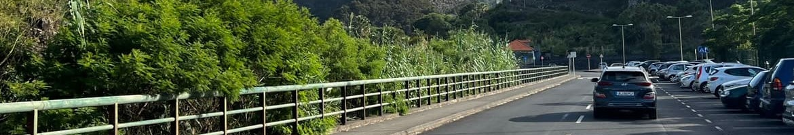
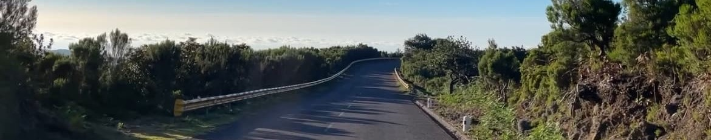

In de buurt van het vliegveld
Hieronder vindt u een lijst met autoverhuurders waarbij u de optie heeft om de auto op te halen in de buurt van het vliegveld. Dus op loop afstand. Zelf heb ik geen ervaring met deze autoverhuurders en adviseer ik om eerst reviews te gaan lezen voordat u een keuze maakt waar u een auto wilt huren.
1. Madeira Rent
Bij deze autoverhuurder is het mogelijk om in het hoogseizoen een auto te huren vanaf €43,41 per dag. Dit is dan ook een Peugeot 108 en hier passen 4 personen in. De duurste optie in het hoogseizoen is een Mercedes busje van €188,- per dag. In dit busje passen 9 personen. Deze prijzen zijn gebaseerd op het hoogseizoen. Dit betekent dat de prijzen lager kunnen zijn buiten de zomermaanden.
2. Atlantic Rent-A-Car
Bij deze autoverhuurder kan je een auto huren vanaf €52,- per dag. Wel is het opvallend dat je veel extra kosten kan maken voor extra functies en heb je bijvoorbeeld ook 'Luchthavenkosten' van €23,50. Let daarom goed op terwijl je de site bekijkt en vergeet de reviews niet te lezen.
3. Why Not Car Rental
Bij deze autoverhuurder kan je vanaf €43,- per dag een auto huren. Als je met een groep reist kan je ook voor een busje kiezen voor 9 personen. Deze is slechts €105,- per dag. Bij deze verhuurder kan je ook extra's toevoegen, zoals functies, maar ook extra verzekeringen.

In de buurt van de haven
Er is ook een grote kans dat je met het vliegtuig land op Porto Santo om vervolgens met de boot naar Madeira te gaan. In dit geval kom je aan op de haven bij Funchal op Madeira. Voor dit geval heb ik hier onder ook een lijstje gemaakt met autoverhuurders in de buurt van de haven. Zelf heb ik ook geen ervaring met het huren van een auto op Madeira, maar weet ik wel dat dit heel populair is. vergeet dan ook niet de reviews van tevoren te lezen voordat je een auto huurt.
1. Rent-A-Car Madeira
Bij deze autoverhuurder beginnen de prijzen bij €55,- per dag. Voor een 4 persoonsauto. Ook bij dit bedrijf kan je een busje huren voor 9 personen. Dit kost €160,- per dag. Opvallend bij deze autoverhuurder is dat als je nog een bestuurder wil aanwijzen, zodat meerdere mensen de auto mogen besturen, dit €5,- per dag extra kost.
2. Budget
Deze autoverhuurder biedt een auto aan voor €41,- per dag. Om het gemakkelijker te maken heeft dit bedrijf ook een app om alle mogelijkheden te bekijken en je auto te reserveren. Ten slotte staat er in de reviews dat er ook wel een automatisch extra kosten bij op komen voor extra verzekeringen, dus let hier op. Daarom is het belangrijk om de reviews te lezen, om goed voorbereid te zijn.
3. Rent a Car Futuro
Vanaf €35,- per dag kan je een auto huren bij Futuro. Dit is de laagste huurprijs die ik tot nu toe heb gevonden op het eiland. Je kan alleen geen busje huren bij dit bedrijf voor als je met een grotere groep bent. Het is fijn dat de locatie van dit bedrijf dicht bij de andere autoverhuurders is, zodat je gemakkelijk kan vergelijken en binnen kan lopen.
